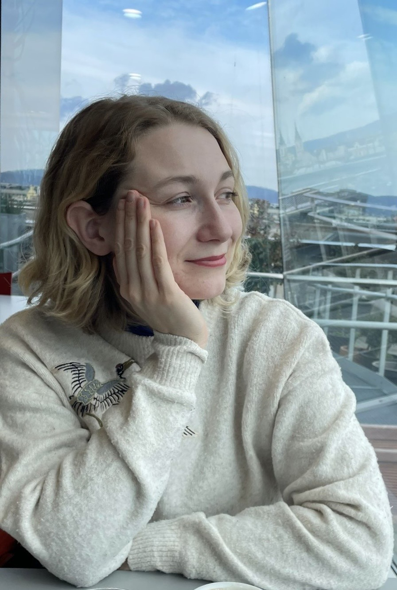

Hyggehäuser
From spatial research to digital platform — a full UX case study rooted in architecture. How do you design a building that makes community inevitable?
View case study →
Architecture background. UX thinking. Designing the conditions for human connection — in space and in interface.
see projects ↓Selected Work
From spatial research to digital platform — a full UX case study rooted in architecture. How do you design a building that makes community inevitable?
View case study →

Redesigning a transit hub through behavioural research and spatial interaction design. Four user types, one space, and the question of how architecture guides human decision-making.
View case study →
Both projects include spatial research, user journey mapping, and interaction design — bridging architecture and UX.
About

I'm an architect trained in Japanese design principles, where the relationship between humans and space is central. Throughout my career, I've been drawn to the social dimension of architecture — how spatial design can facilitate community, reduce loneliness, and improve quality of life.
I'm now transitioning toward UX and interaction design, bringing my architectural perspective to digital interfaces. Architecture taught me that you cannot force behaviour — you design the conditions and observe what emerges. That is the same problem UX solves, in a different medium.
Download CV ↓Disciplines
Tools
Languages